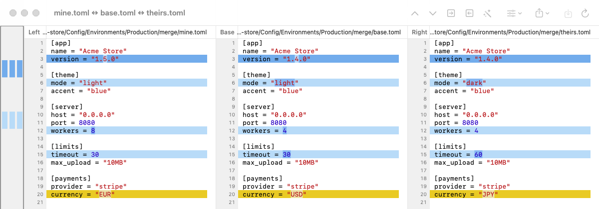
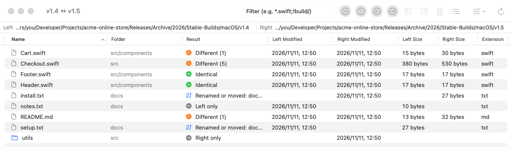

MacMerge
Compare files and folders side by side, see exactly what changed, and merge with a keystroke. Free and open source, inspired by WinMerge.

Compare files and folders side by side, see exactly what changed, and merge with a keystroke. Free and open source, inspired by WinMerge.
Everything you know from WinMerge, as a native Mac app.
Aligned panes, colored differences, differences within lines, and a map of where every change is.
Copy a difference left or right with ⌥← / ⌥→, edit in place, undo, and save.
Compare your version, the base and theirs. Auto merge takes every one-sided change and leaves only real conflicts.
Open a file with <<<<<<< markers and resolve it in three panes. Works as git difftool and git mergetool.
Compare whole folders, filter by result or file mask, copy or trash files, and detect renamed or moved files.
Ignore whitespace, case, blank lines, line endings, or lines matching a regular expression.
Detects UTF-8, UTF-16, Shift_JIS and EUC-JP, and LF/CRLF/CR, and saves files back the way they were.
Show only a few lines around each difference, wrap long lines, and color the syntax of common languages.
Export an HTML report or a unified patch, print a comparison, and save comparisons as project files.
Blue changes were made on one side only and can be merged automatically. Yellow changes are conflicts for you to decide.
Open the conflict files Git leaves behind, or let git mergetool start MacMerge for you.

See which files are identical, different, or on one side only, as a tree or a flat list.
Copy files across, move them to the Trash, or zip them up. Renamed and moved files are paired automatically.

macOS 14 or later · Apple silicon and Intel · MIT License
Set MacMerge as your diff and merge tool:
git config --global difftool.macmerge.cmd \
'/Applications/MacMerge.app/Contents/MacOS/MacMerge "$LOCAL" "$REMOTE"'
git config --global mergetool.macmerge.cmd \
'/Applications/MacMerge.app/Contents/MacOS/MacMerge "$LOCAL" "$BASE" "$REMOTE" "$MERGED"'
git config --global mergetool.macmerge.trustExitCode false
git difftool -t macmerge
git mergetool -t macmerge